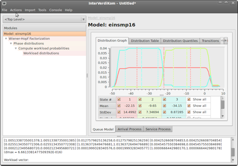

InterVerdiKom

Ziel des durch die Deutsche Forschungsgemeinschaft geförderten Projekts VERDIKOM am Lehrstuhl für Computergrafik und Wissenschaftliches Rechnen an der Universität Duisburg-Essen ist die Weiterentwicklung von Modell- und Analysewerkzeugen, um die Ressourcenplanung in Telekommunikationsnetzen bezüglich der Leitungs-, Vermittlungs- und Pufferungskapazitäten zu unterstützen. Im Mittelpunkt steht dabei die sich im Internet vollziehende Konvergenz von Sprach-, Daten- und Videoübertragung sowie mobiler Dienstleistungen (”Triple-“, ”Quadruple-Play“) unter speziellen Dienstgüteanforderungen auf Grundlage einer Quality of Service-Charakteristik im Sinne des ISO 13236-Rahmenwerks von 1998.
Seit Ende 2008 steht ein leistungsfähiges System für eine intervallbasierte Analyse zur Ergebnisverifikation von Verteilungen für die Analyse von diensteintegrierenden Kommunikationsnetzen zur Verfügung: InterVerdiKom.
Ziel ist die Beschreibung von Ankunfts- und Abgangsprozessen in Vermittlungsnetzen mittels Semi-Markov Modellierung unter Berücksichtigung von Zuteilungs- und Aufsplittungsstrategien und mit Fokus auf die aktuell im Internet sichtbaren Anwendungen und ihre Verkehrsprofile. Eine Schnittstelle zu Systemen, die matrixanalytische Ansätze zur Modellierung von Warteschlangen verwenden, wird bereitgestellt.
Die darin unterstützte Analyse transienter Zustände von Systemen erlaubt es, bei Änderung der Netzparameter verlässliche Aussagen zum Übergangsverhalten der Bediensysteme in Abhängigkeit vom Systemzustand zu machen und Protokollstrategien zur kontrollierten Absenkung und Erhöhung der Verkehrslast neu zu bewerten.
Über InterVerdiKom
